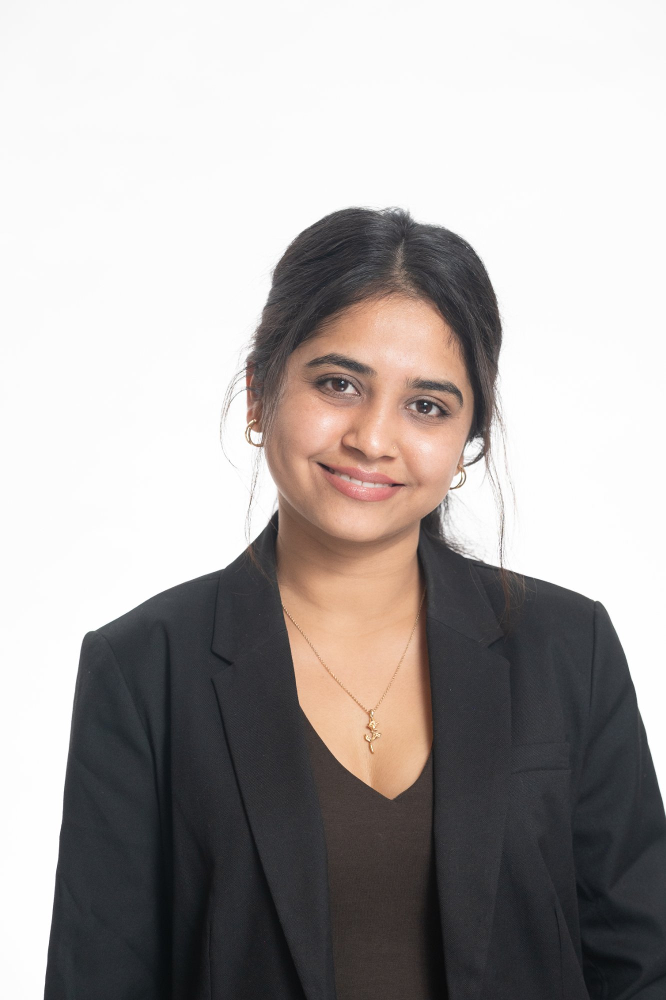

Data Scientist & AI/ML Engineer · GenAI · Agentic AI · LLM Systems
Most ML work dies in a notebook. Mine doesn't. I've cut demand-planning error by 31%, lifted SaaS conversion by 9.4%, and built RAG systems scoring 0.92 faithfulness — all deployed, all measured, all in production.
Currently: demand forecasting at Labelmaster + learning MCP, A2A, LLMOps & agentic AI frameworks

The Case for Hiring Me
Every project I take on follows one rule: if it doesn't change a decision or improve a metric, it doesn't ship.
My LSTM forecasting system at Labelmaster runs across 8+ departments with automated pipelines, MLflow experiment tracking, and rolling backtesting — not a proof-of-concept sitting in someone's laptop.
At August Infotech, I didn't stop at AUC-ROC. I built an experimentation framework, ran 8-week A/B tests, and proved the model's impact on revenue — trial-to-paid conversion, churn reduction, and AE outreach efficiency.
My RAG platforms don't hallucinate. WanderMind AI uses triple-layer validation, RAGAS evaluation, and constitutional output checks. CatSense uses schema-validated JSON for deterministic UI rendering.
Background
MS Data Science at Illinois Institute of Technology (GPA 3.66, Class of 2026). 3+ years of applied ML across supply-chain forecasting, B2B SaaS analytics, and agentic AI systems.
My sweet spot is the gap between "model works in a notebook" and "model runs in production and people trust it." I've owned every stage — problem framing with stakeholders, system architecture, model training, deployment, monitoring, and the experimentation to prove it works.
AWS ML, Google Cloud ML Engineer, and IBM Data Analytics certified. McKinsey Forward alumna.
Technical
Languages & Core
ML & Data Science
GenAI & Agentic AI
Visualization & BI
Engineering & Cloud
Career
Jan 2026 — Present
Data Science Co-op
Labelmaster · Chicago, IL
Architected an end-to-end monthly sales forecasting system spanning 8+ departments. Transitioned from recursive to direct multi-output LSTM, eliminating error compounding. Designed bias-correction layers reducing WAPE by 24.5–31.5% and built a rolling-origin backtesting framework (37 folds). Also evaluated XGBoost as baseline — which outperformed LSTM across all departments, informing model selection decisions.
Aug 2025 — Present
Graduate Teaching Assistant — CS487 Software Engineering
Illinois Institute of Technology · Chicago, IL
Instructing 50+ students through office hours, live sessions, and rubric design for research framework papers.
Jan 2024 — Jun 2024
Data Scientist Intern
August Infotech · Surat, India
Built a production churn prediction and expansion-likelihood platform for a B2B SaaS client on AWS. Engineered RFM-style features from 500K+ event logs, trained XGBoost achieving 0.81 AUC-ROC (up from 0.68 logistic baseline), and deployed batch + real-time scoring via Lambda. Designed an 8-week A/B test that proved model-driven onboarding changes lifted conversion by 9.4% and cut 90-day churn by 14.7%.
Jun 2022 — May 2023
Machine Learning Intern
Orion Technolabs · Ahmedabad, India
Built a B2B lead scoring system improving top-decile conversion by 11–15% over rule-based scoring (AUC-ROC: 0.77–0.80). Compared LR, RF, XGBoost, and MLP. Deployed via batch scoring on EC2 and Flask REST API, integrating scores into the CRM with hot/warm/cold priority bands.
Portfolio
Click any project to see the full story: what problem I solved, how I approached it, and what it delivered.
Problem
Travel AI tools hallucinate and can't handle multi-hop constraints like "pet-friendly hotel near a vegan restaurant in a walkable neighborhood." No memory across sessions.
Approach
Adaptive RAG with fine-tuned Mistral 7B query router (94% accuracy, 60ms) selecting between dense, sparse, hybrid, and graph retrieval. BERT personality classifier (7 dimensions, 91% accuracy). Persistent memory for cross-session learning.
Result
Faithfulness: 0.76 → 0.92 on RAGAS. Repeat queries reduced 78%. Constitutional validation catches hallucinations before users see them.
Problem
Paper-based heavy equipment inspections are slow, inconsistent, and can't reference service manuals in the field. Missing defects creates safety liability.
Approach
Full-stack multimodal assistant: photo + voice input, RAG-grounded reasoning with Actian VectorAI retrieving service-manual excerpts, triple-layer hallucination control, schema-validated JSON (Zod) for deterministic UI.
Result
Inspections completable in under 10 minutes. Reliable severity classification with evidence citations. Edge deployment via Cloudflare Workers for fleet-level analysis.
Problem
Product teams spend ~2 hours per experiment analyzing results manually, miss pathologies (SRM, novelty effects, Simpson's paradox), and can't run causal inference without randomization.
Approach
Experimentation platform with Bayesian + frequentist testing, CUPED variance reduction (38% SE decrease), sequential testing, auto-diagnostics for 8 pathologies. Causal toolkit: DiD, Synthetic Controls, RDD, IV.
Result
Analysis time: ~2 hours → under 10 minutes. Validated via 1,000-run A/A simulations (Type I error: 4.8%). Found hidden segment-level effects enabling targeted rollout.
Problem
In federated learning, slower edge clients send stale gradients that poison the global model. FedAsync and FedBuff collapse under high-straggler conditions.
Approach
Momentum-based gradient projection decomposing updates into aligned vs orthogonal components, selectively filtering harmful stale gradients. Quality-aware aggregation with freshness functions and delta-loss scoring.
Result
52–53% accuracy on CIFAR-10 (ResNet-18) with 20–50% delayed clients under non-IID settings, vs 11–28% for baselines. Stable across 1,000+ rounds.
Problem
Crypto analysis requires real-time data from multiple APIs. Manual monitoring is slow and fragmented across tools.
Approach
Autonomous agent with graph-based workflow, GPT-4 reasoning, 3 custom tools for live data. Thread-based memory. Production safeguards: API timeouts, 12K context-window controls, structured logging.
Result
Automated test suite validating tool selection accuracy and multi-tool coordination. Graceful error recovery across edge cases.
Problem
UK property valuation lacks scalable analytics across 25M+ transactions spanning temporal, geographic, and property dimensions.
Approach
End-to-end ML pipeline: ensemble models (RF, XGBoost), SHAP feature analysis, K-means clustering (5 buyer segments, silhouette 0.68), interactive Streamlit dashboards.
Result
RMSE £42K, R² 0.87. Buyer segmentation and seasonal trends enabling strategic investment decisions. Spark-compatible for future scale.
Problem
Job application prep is manually intensive — 30+ minutes per application across JD parsing, resume tailoring, and cover letter writing.
Approach
Two-part system: automated job discovery via n8n workflows, plus GPT-4 resume tailoring and cover letter generation with Pydantic structured output validation.
Result
Reduced application prep time by 70%. Structured outputs ensure consistent quality across hundreds of applications.
Problem
Trip planning involves hours of fragmented research across sites, manually balancing costs, preferences, and logistics.
Approach
Multi-agent system: specialized agents (research, budget, itinerary) collaborate via CrewAI. Docker-containerized with FastAPI. Itineraries generated in under 5 seconds.
Result
Reduced manual travel research by ~70%. Fully containerized and deployable. Agents produce structured, actionable itineraries.
Academics
Master's in Data Science
Illinois Institute of Technology
Aug 2024 — May 2026
Focus: Applied ML, NLP, Agentic AI, Federated Learning
GPA: 3.66 / 4.0B.E. in Information Technology
Gujarat Technological University
2020 — 2024
Foundation in CS, algorithms, and software engineering
GPA: 3.8 / 4.0Credentials
AWS Machine Learning
Amazon Web Services
Google Cloud ML Engineer
Google Cloud
IBM Data Analytics
IBM
McKinsey Forward Program
McKinsey & Company
Get in touch
I'm open to full-time Data Scientist, ML Engineer, AI/GenAI Engineer, and Product Manager roles starting 2026. Work-authorized on OPT STEM extension. If you're solving hard problems with AI, I want to hear about it.